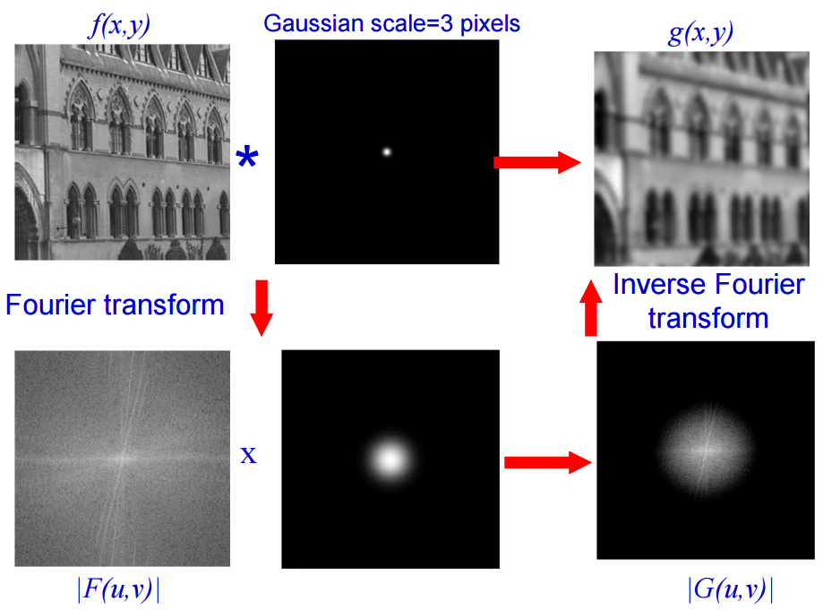

Fourier Transforms
(Method 2)
The Fourier Transform (Denoted `ℱ` ) is used to
turn functions with a domain of time `g(t)` to a domain of frequency `hat(g)(f)`.
This process can also be reversed using the Inverse Fourier Transform (Denoted `ℱ^-1`)
The FT has many useful properties but we will only look at a few in this guide.
In terms of digital images you can think of the transform like this:
Space Domain
(Pixel Coordinates)
`g(m,n)` where `m` = Rows , `n` = Columns
`ℱ^^^`
`vvvℱ^-1`
Spatial Frequency Domain
(Number of cycles per degree of visual angle)
`hat(g)(k,l)` where `k` = Horizontal Frequency, `l` = Vertical Frequency
Definition For Continuous Functions:
`ℱ (g(t)) = hat (g) (f) = int_-oo^oo g(t)e^(-2pi itf) dt `
`ℱ^-1 (hat (g)(f)) = g(f) = int_-oo^oo hat(g)(f)e^(2pi itf) df `
Definition For 2D Discrete Functions
`ℱ (g(m,n)) = hat (g) (k,l) = sum_(m=0)^(M-1) sum_(n=0)^(N-1) g(m,n)e^(-2pi(mk/M + nl/N) ) `
`ℱ^-1 (hat(g)(k,l)) = g(m,n) = 1/(MN) sum_(m=0)^(M-1) sum_(n=0)^(N-1) hat(g)(k,l)e^(2pi(mk/M + nl/N) ) `
Periodicity and Discrete Fourier Transforms
It is important to note that 2D DFTs are periodic functions. Meaning, the output of the
function repeats itself at regular intervals. Later on we must take this into account
when applying our filter.
`hat (g)(k + M, l + N) = hat(g)(k,l)` , Period = [M,N]
`g(m + M, n + N) = g(m,n)` , Period = [M,N]
The Convolution Property of the Fourier Transform
`ℱ[g(m,n) ** h(m,n)] hArr hat(g)(k,l)* hat(h)(k,l) `
FT the Convolution of the Space Domain = Multiplication in the Frequency Domain
The convolution property is what makes the Fourier Transform so powerful for image processing.
Applying filters by directly solving the convolution (Method 1) turns out to get much
more expensive as the size of the filter and input image grows.
(For each pixel in the input image, every pixel in the filter image gets multiplied and
summated. That's a lot of multiplication!)
Applying Filters with FTs
- Apply the FT on the input and filter image independently.
`ℱ(g(m,n)) * ℱ(h(m,n)) = hat(g)(k,l) * hat(h)(k,l)`
- Perform multiplication and then use the Convolution Property.
`hat(g)(k,l) * hat(h)(k,l) = ℱ[g(m,n) ** h(m,n)]`
- Apply the inverse FT to obtain the filtered image.
`ℱ^-1[ℱ(g(m,n) ** h(m,n))] = g(m,n) ** h(m,n)`

http://www.robots.ox.ac.uk/~az/lectures/ia/lect2.pdf